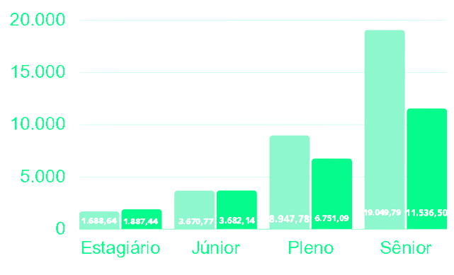

• Programador - O que é?
Programador ou Desenvolvedor (Também chamados de Dev, do inglês "Developer") é o profissional que atua na área de Tecnlogia da Informação (TI), cujo trabalha com códigos simples ou complexos através de linguagens de programação para desenvolver sistemas de software para usos do cliente.
Existem tipos de Programador: Web Front-End (Trabalha com a parte de interface Web), Web Back-End (Trabalha com o Servidor), Full-Stack (Atua com ambas as partes. Além de desenvolver aplicativos, por exemplo), Desktop (Trabalha com aplicações para rodar em computadores), Mobile (Trabalha com aplicações para dispositivos móveis) e de Jogos (Trabalha no desenvolvimento de jogos), entre outros.

Foto: Luis Gomes/pexels.com open_in_new
• Características de um Programador
Um Programador tem como características saber lídar com resoluções de problemas, já que programação não é uma tarefa nada fácil. Precisam lídar com diversas soluções de bugs, que é algo bastante comum. Além disso, precisam ter uma boa habilidade de comunicação, e uma curva de aprendizado, já que a tecnologia evolui constantemente.
• Empresas que os Programadores trabalham
Há muitas empresas que contratam esse tipo de profissional, muitas famosas, inclusive. Algumas delas, por exemplo: Google, YouTube, LinkedIn, Netflix, Facebook, Microsoft, PicPay etc...
• Média Salárial
A média salárial varia conforme o nível de experiência e habilidade. Um programador pode ser classificado como:
- Estágiário (Começo de carreira, geralmente iniciado por estudantes)
- Júnior (Profissional novo no cargo ou ainda está desenvolvendo habilidades)
- Pleno (Profissional mais experiente que demonstra mais habilidades necessárias)
- Sênior (Profissional com mais experiência que a média, possuindo todas as habilidades, com especializações e certificações)
A seguir, um gráfico sobre a média salárial de um Programador (via PJ & CLT respectivamente) no ano de 2022:

Dados do site bossabox, citado nas Referências Bibliográficas.
*Vale ressaltar que os dados não são 100% exatos. O salário varia muito, podendo ser menor ou até mesmo chegar a valores quase 5x (ou mais dependendo) maiores que o mostrado anteriormente.*
• Quais cursos/faculdades/
universidades podemos encontrar essa especialização?
Programação não exige fazer faculdade para aprender ou trabalhar, porém ajuda muito no quesito de especialização e networking (rede de contatos). Entretanto, as as faculdades que podem se fazer:
- Ciências da Computação
- Engenharia de Software
- Sistemas de Informação
- Engenharia da Computação
- Tecnologia da Informação (TI)
- Design de Jogos
- Análise e Desenvolvimento de Sistemas (ADS)
- Sistemas para Internet
Algumas faculdades não tem foco apenas na programação, mas também em computação em si.
• Disciplinas necessárias para a formação desse profissional
Na promgramação, as disciplinas que se utilizam são:
- Matemática
- Banco de Dados
- Algoritmo
- Física (bastante em jogos), entre outras...